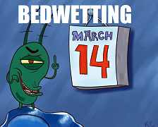
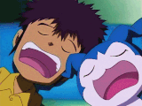
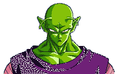
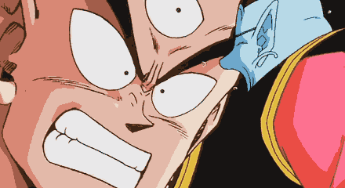

Silly and fun stuff
There's a time and place for everything, even being goofy! This page is filled with some random and silly stuff that appears in my head.
Don't worry if a joke gets over your head, thats what the button's for.
Davis is a character in Digimon Season 2.
(Daisuke in the original, but this only concerns the english version)
There's a scene where he mentions that he wets the bed every other thursday.
How peculiar, every other thursday? So I thought it was funny to "keep track"
of his bedwetting cycle. This assumes he wet the bed in March 14th 2024

Will Davis wet the bed this thursday: Yes
If it's not Thursday, the results will be for next thursday.

What time would it be after I watch Digimon: The Movie? ?
For all of those normal people who don't regulary watch Digimon: The Movie...
What time would it be after I watch Shrek? ?
Jokes
Namek is a planet in Dragon Ball Z, home to a race called Namekians.
Take a look at the open landscape.

A: Bluegrass
|  |
|
That was so funny I forgot to laugh. |
Knock knock.
-- Who's there?.
Saul.
--Saul who?
It's a play on words, try saying it aloud.
Knock knock.
-- Who's there?.
You.
--You who?

Tenshinhan or Ten for short, is the original name for Tien Shinhan used in the Japanese version,
and Ten sounds like "10", as a bonus Chaozu can't count.

DID YOU CATCH ALL OF THAT!?? HUH!?
YOU CAN COUNT TO TEN, BUT YOU CANT COUNT TO CHAOOOZUUUUU!!